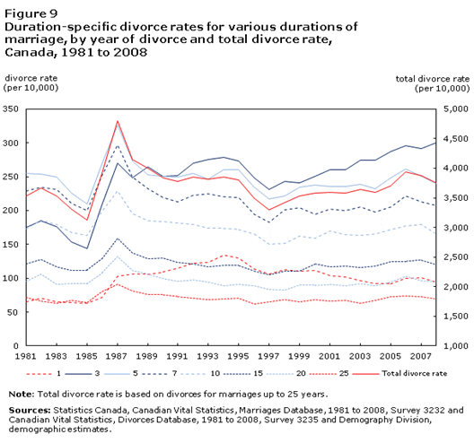

Patterns and Trends in Canadian Marriages and Relationships
Take a look at the following article to get a glimpse of what marriage, as a social institution, looks like in Canada today.
Marriage in Canada is a legal and social institution that plays a significant role in the lives of individuals and communities across the country. As of my last knowledge update in January 2022, here are several key aspects to consider when exploring the topic of marriage in Canada:
Tabs
It's essential to note that laws and regulations can change, so it's advisable to check with local authorities or legal professionals for the most up-to-date information on marriage in Canada.
Marriage Throughout History
|
The social institution of marriage is constantly evolving. Additionally, it is a challenge to define a traditional marriage, as they are incredibly varied. What is traditional is dependent on time and place. For some people, a traditional marriage might be considered a man and a woman raising children. In other cultures, polygamy is considered the norm. |
|
In the past, and still in some places today, marriage was and is a way to regulate sexual activity and ensure the young will be nurtured and protected. The concept of love does not have a place in marriages. From the 18th through to the 20th century in Canada, the concept of happiness became more prevalent, and people started to have more say in their marriage partner. |
|
And as women gained rights, they started to be viewed more as partners rather than property - and the institution of marriage changed accordingly. Read the following articles to see how marriage patterns marriage norms and customs have changed over time in Canada. |
Marriage Customs: Arranged Marriages
As you have discovered, marriage customs are influenced by the social and economic conditions of the time and region and they evolve accordingly.
The custom of an arranged marriage is not new. However, the realities associated with what it means to have an arranged marriage has changed over time and differ by culture.
Arranged marriages can be thought of as a continuum. For some cultural groups, the couple has no say in their marriage partner, and they are forced into a partnership.
At the opposite end of the continuum, even the current use of online dating sites that involve matching quizzes has an element of arrangement.
In the middle of the continuum might be what is known as a semi-arranged marriage, where people simply gain parental approval.
Take a look at the following videos and blog regarding arranged marriages.
Investigate the differences and notice the impact that these arranged marriages have on the individuals involved in the intimate relationships.
Safe Space
The information you are about to view contains sensitive information.
There are references to and descriptions of physical and emotional abuse that may trigger strong emotions in some individuals. Viewer discretion is advised.
Arranged marriages are a cultural and social practice where families or third parties play a significant role in selecting a spouse for an individual, often based on factors such as compatibility, social status, religion, and family background. This practice has been prevalent throughout history and is still a common method of matchmaking in various cultures around the world. Here's an exploration of the topic, taking into account different aspects:
Timeline
It's important to recognize that attitudes towards arranged marriages vary widely, and individual experiences within this practice can differ significantly. As societal norms evolve, the dynamics of arranged marriages continue to adapt, reflecting the intersection of tradition and modernity.
Divorce in Canada
Just how common is divorce in Canada? Examine the following figure to identify patterns and trends in divorce rates.

The history of divorce is a complex and multifaceted journey that spans different cultures, societies, and legal systems. The concept of divorce, or the dissolution of marriage, has evolved significantly over time, reflecting changes in social, religious, and legal attitudes. Here's an exploration of the history of divorce, highlighting key developments and shifts:
Tabs
Understanding the history of divorce requires considering the intertwined influences of legal, religious, and social factors. The ongoing evolution of divorce laws and cultural attitudes reflects broader changes in societal values, emphasizing the importance of flexibility and adaptability in addressing the complexities of human relationships.
Multiple Choice Activity: Patterns and Trends in Canadian Marriages and Relationships
Multiple Choice
Multiple Choice
Multiple Choice
Multiple Choice
Multiple Choice
Multiple Choice
Multiple Choice
Multiple Choice
Multiple Choice
Multiple Choice